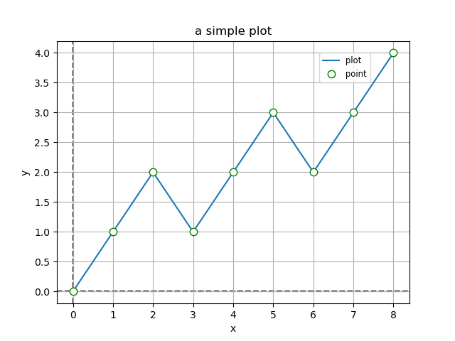
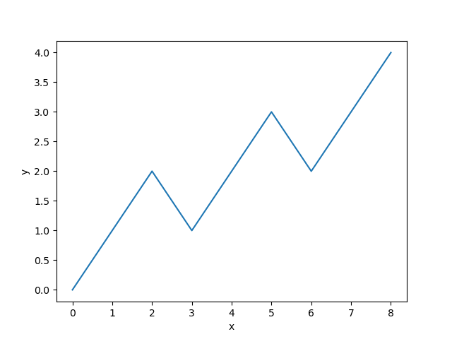

kitpylib.PyPlot package#
Module contents#
Submodules#
kitpylib.PyPlot.backend module#
Matplotlib.PyPlot backend for plotting.
- kitpylib.PyPlot.backend.plot2d(x, y, px=None, py=None, grid=False, title=None, legend=None, axh=False, axv=False, *args)[source]#
Function plot2d
Example#
With all arguments:
>>> import kitpylib as kpl >>> a=[0, 1, 2, 3, 4, 5, 6, 7, 8] >>> b=[0, 1, 2, 1, 2, 3, 2, 3, 4] >>> kpl.plot2d(a, b, px=a, py=b, grid=True, title='a simple plot', legend='plot', axh=True, axv=True)

With only optional arguments:
>>> kp.plot2d(a, b)

kitpylib.PyPlot.funcplot module#
- kitpylib.PyPlot.funcplot.fplot2d(f, start, stop, num=100, *args, **kwargs)[source]#
A function to plot 2d functions.
Parameters#
- ff(x)
The function to plot.
- startnumber
The starting value of the sequence.
- stopnumber
The end value of the sequence.
- numnumber, optional
Number of samples to generate. The default is 100.
- argsoptional
See documentation of kpl.plot2d.
- kitpylib.PyPlot.funcplot.fplot3d(f, xstart, xstop, ystart, ystop, num=100)[source]#
A function to plot 3d functions.
Parameters#
- ff(x)
The function to plot.
- numnumber, optional
Number of samples to generate. The default is 100.
For X:#
- xstartint
The starting value of the sequence x.
- xstopint
The end value of the sequence x.
For Y:#
- ystartint
The starting value of the sequence y.
- ystopint
The end value of the sequence y.